Breaking Ground
Learn more about conservation agriculture and how smallholder farmers across the developing world are mechanizing through innovation.

Learn more about conservation agriculture and how smallholder farmers across the developing world are mechanizing through innovation.
The two-wheel tractor is the world’s first multipurpose tractor designed for rugged small plots of land. It comes with attachments for land prep, irrigation, harvest, and transport, keeping the machine active throughout the year. With technology and new business models, this machine has the potential to radically change smallholder systems.
Hello Tractor has partnered with FACASI (a CIMMYT-led and ACIAR-funded initiative) to bring you relevant and up to date information on small farm mechanization, conservation agriculture, and smart business models to ensure maximum smallholder impact. This site is your resource guide to all things related to sustainable smallholder mechanization.
See videos from the field with informative clips and tutorials from our valued partners!

Small-scale mechanization using 2wheel tractors
Supporting smallholder farmers in Zimbabwe with Smart mechanization
Maize and Wheat production in Kenya
A New Approach to Mechanization in Tanzania
Protecting Soil Health in Zimbabwe

Smallholder Wheat & Maize farming in Ethopia
FACASI’s cartoon book provides an easy read to anyone looking to understand the benefits of the two-wheel tractor for farm mechanization.